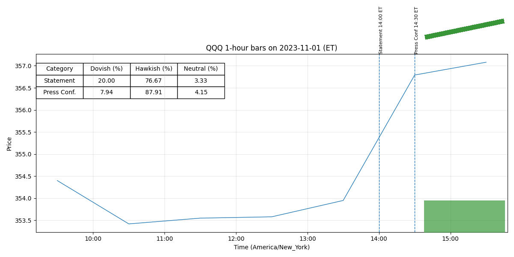

For release at 2:00 p.m. EDT November 1, 2023 Recent indicators suggest that economic activity expanded at a strong pace in the third quarter. (0.441)
Job gains have moderated since earlier in the year but remain strong, and the unemployment rate has remained low. (0.549)
Tighter financial and credit conditions for households and businesses are likely to weigh on economic activity, hiring, and inflation. (0.708)
The extent of these effects remains uncertain. (0.586)
The Committee remains highly attentive to inflation risks. (0.487)
(more) -2- In assessing the appropriate stance of monetary policy, the Committee will continue to monitor the implications of incoming information for the economic outlook. (0.761)
The Committee would be prepared to adjust the stance of monetary policy as appropriate if risks emerge that could impede the attainment of the Committee’s goals. (0.721)
Attachment For release at 2:00 p.m. EDT November 1, 2023 Decisions Regarding Monetary Policy Implementation The Federal Reserve has made the following decisions to implement the monetary policy stance announced by the Federal Open Market Committee in its statement on November 1, 2023: • The Board of Governors of the Federal Reserve System voted unanimously to maintain the interest rate paid on reserve balances at 5.4 percent, effective November 2, 2023. (0.477)
• As part of its policy decision, the Federal Open Market Committee voted to direct the Open Market Desk at the Federal Reserve Bank of New York, until instructed otherwise, to execute transactions in the System Open Market Account in accordance with the following domestic policy directive: "Effective November 2, 2023, the Federal Open Market Committee directs the Desk to: (0.529)
For release at 2:00 p.m. EDT September 20, 2023
Recent indicators suggest that economic activity has been expanding at a solid pace. (0.419)
Job
gains have slowed in recent months but remain strong, and the unemployment rate has remained
low. (0.580)
Tighter credit conditions for households
and businesses are likely to weigh on economic activity, hiring, and inflation. (0.609)
The extent of
these effects remains uncertain. (0.586)
The Committee remains highly attentive to inflation risks. (0.487)
In assessing the appropriate stance of monetary policy, the Committee will continue to
monitor the implications of incoming information for the economic outlook. (0.775)
The Committee
(more)
-2-
would be prepared to adjust the stance of monetary policy as appropriate if risks emerge that
could impede the attainment of the Committee’s goals. (0.711)
Attachment
For release at 2:00 p.m. EDT September 20, 2023
Decisions Regarding Monetary Policy Implementation
The Federal Reserve has made the following decisions to implement the monetary policy stance
announced by the Federal Open Market Committee in its statement on September 20, 2023:
• The Board of Governors of the Federal Reserve System voted unanimously to maintain the
interest rate paid on reserve balances at 5.4 percent, effective September 21, 2023. (0.496)
• As part of its policy decision, the Federal Open Market Committee voted to direct the Open
Market Desk at the Federal Reserve Bank of New York, until instructed otherwise, to
execute transactions in the System Open Market Account in accordance with the following
domestic policy directive:
"Effective September 21, 2023, the Federal Open Market Committee directs the Desk to: (0.529)